<!DOCTYPE html>

<html>
<head>
<meta charset="utf-8"/>
<meta content="width=device-width, initial-scale=1.0" name="viewport"/>
<meta content="ie=edge" http-equiv="X-UA-Compatible"/>
<title>Graph Summarization</title>
<style>
    * {
        margin: 0;
        padding: 0;
    }

    #mindmap {
        display: block;
        width: 100vw;
        height: 100vh;
    }
    </style>
<link href="https://cdn.jsdelivr.net/npm/markmap-toolbar@0.15.4/dist/style.css" rel="stylesheet"/>
<link href="https://cdn.jsdelivr.net/npm/katex@0.16.8/dist/katex.min.css" rel="stylesheet"/>
<link href="https://cdn.jsdelivr.net/npm/@highlightjs/cdn-assets@11.8.0/styles/default.min.css" rel="stylesheet"/>
</head>
<body>
<svg id="mindmap"></svg>
<script src="https://cdn.jsdelivr.net/npm/d3@7.8.5/dist/d3.min.js"></script>
<script src="https://cdn.jsdelivr.net/npm/markmap-view@0.15.4/dist/browser/index.js"></script>
<script src="https://cdn.jsdelivr.net/npm/markmap-toolbar@0.15.4/dist/index.js"></script>
<script>(e => { window.WebFontConfig = { custom: { families: ["KaTeX_AMS", "KaTeX_Caligraphic:n4,n7", "KaTeX_Fraktur:n4,n7", "KaTeX_Main:n4,n7,i4,i7", "KaTeX_Math:i4,i7", "KaTeX_Script", "KaTeX_SansSerif:n4,n7,i4", "KaTeX_Size1", "KaTeX_Size2", "KaTeX_Size3", "KaTeX_Size4", "KaTeX_Typewriter"] }, active: () => { e().refreshHook.call() } } })(() => window.markmap)</script>
<script defer="" src="https://cdn.jsdelivr.net/npm/webfontloader@1.6.28/webfontloader.js"></script>
<script>(() => { setTimeout(() => { const { markmap: M, mm: ge } = window, me = new M.Toolbar; me.attach(ge); const fe = me.render(); fe.setAttribute("style", "position:absolute;bottom:20px;right:20px"), document.body.append(fe) }) })()</script>
<script>
        ((F, I, R, H) => {
            const X = F();
            window.mm = X.Markmap.create("svg#mindmap", (I||X.deriveOptions)(H), R)
        })(()=>window.markmap, null, {'content': "<div style='display: flex; justify-content: center; align-items: center;'>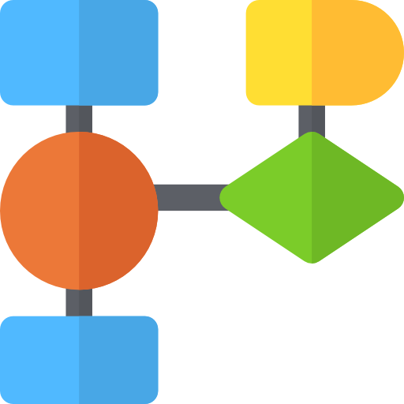</div> <div style='padding-bottom: 5px; text-align: center;'><font color='teal'><h3>Graph Summarization</h3></font></div>", 'depth': 1, 'children': [{'content': 'Bit Compression-based Reduction', 'depth': 2, 'children': [{'content': '大部分是无损压缩', 'depth': 3}, {'content': '在源图中搜索具有共同子节点的节点并对其进行编码,<br>具有连续数字的子节点可以通过记录第一个数字的长度来编码,<br>剩余的子节点通过减去之前的子节点编号来编码', 'depth': 3}, {'content': '缺点: 没有考虑节点和边的属性', 'depth': 3}]}, {'content': 'Simplification-based Reduction', 'depth': 2, 'children': [{'content': '删除无关事件', 'depth': 3}, {'content': 'e.g.LogGC, ProTracer, KCAL', 'depth': 3}]}, {'content': 'Policy-based Reduction', 'depth': 2, 'children': [{'content': '使用预定义策略', 'depth': 3}, {'content': 'e.g.ProvWalls', 'depth': 3}]}, {'content': 'Edge-grouping-based Reduction', 'depth': 2, 'children': [{'content': 'Causality-Preserving Reduction(CPR)', 'depth': 3, 'children': [{'content': "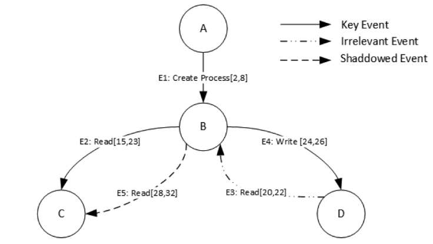", 'depth': 4}, {'content': '通过检测事件之间的因果关系, 将一些事件的数据溯源记录合并为一个事件的数据溯源记录, 从而减少数据溯源记录的开销', 'depth': 4}, {'content': '缺点: 无法处理一些特殊情况, 例如事件之间存在交错的因果关系', 'depth': 4}]}, {'content': 'Process-centric Causality Approximation Reduction(PCAR)', 'depth': 3, 'children': [{'content': "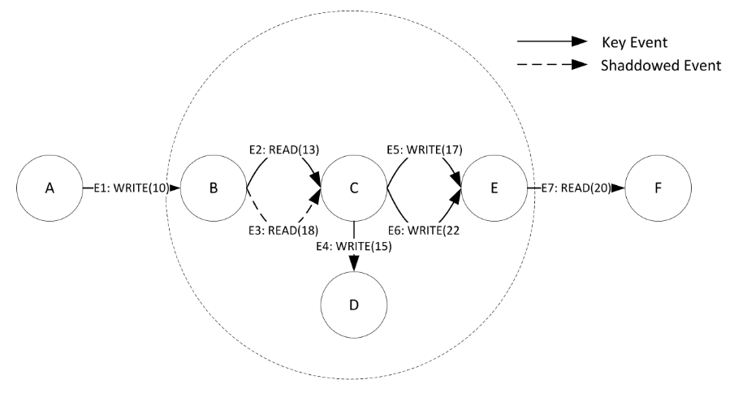", 'depth': 4}, {'content': '通过检测进程之间的关系, 将一些进程的数据溯源记录合并为一个进程的数据溯源记录, 从而减少数据溯源记录的开销', 'depth': 4}, {'content': '可以处理一些特殊情况, 例如进程之间存在交错的因果关系', 'depth': 4}, {'content': 'PCAR 通常与 CPR 结合使用, 以提高数据溯源记录的效率和准确性', 'depth': 4}]}, {'content': 'Continuous Dependence (CD) preservation reduction', 'depth': 3, 'children': [{'content': "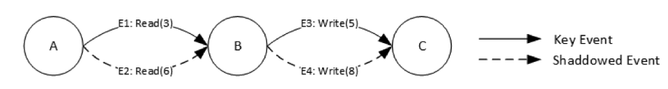", 'depth': 4}, {'content': '通过检测事件之间的连续依赖关系, 将一些事件的数据溯源记录合并为一个事件的数据溯源记录, 从而减少数据溯源记录的开销', 'depth': 4}]}, {'content': 'Full Dependence (FD) preservation reduction', 'depth': 3, 'children': [{'content': "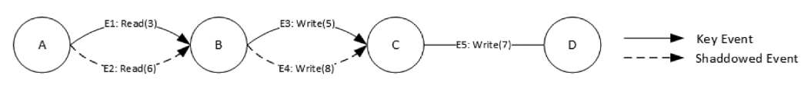", 'depth': 4}, {'content': '通过检测事件之间的全依赖关系, 将一些事件的数据溯源记录合并为一个事件的数据溯源记录, 从而减少数据溯源记录的开销', 'depth': 4}]}, {'content': 'Source Dependence (SD) preservation', 'depth': 3, 'children': [{'content': "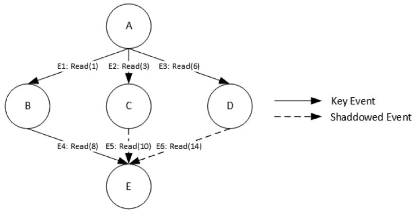", 'depth': 4}, {'content': '通过检测事件之间的源依赖关系, 将一些事件的数据溯源记录删除, 从而减少数据溯源记录的开销', 'depth': 4}]}, {'content': 'GrAAFL', 'depth': 3, 'children': [{'content': "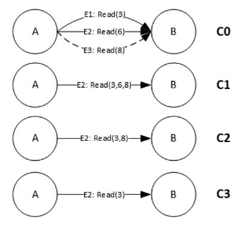", 'depth': 4}, {'content': 'CD, FD 和 SD 都依赖于图(时间戳图)的全局属性, 其可达性随着时间的推移而变化', 'depth': 4}, {'content': '将时间戳图转换为朴素版本图, 然后应用不同的优化技术来减少边数和版本数(区分不同损失程度)', 'depth': 4}]}]}, {'content': 'Node-grouping-based Reduction', 'depth': 2, 'children': [{'content': 'NodeMerge', 'depth': 3, 'children': [{'content': "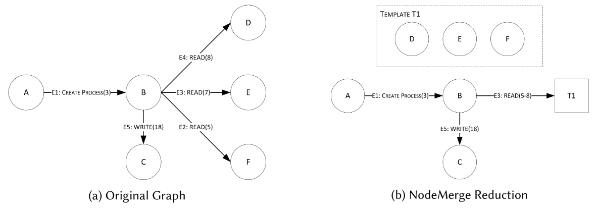", 'depth': 4}]}, {'content': 'Winnower', 'depth': 3, 'children': [{'content': "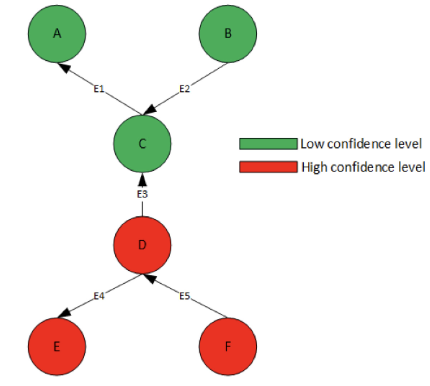", 'depth': 4}, {'content': '为集群体可伸缩性的图摘要算法', 'depth': 4}]}, {'content': 'LogApprox', 'depth': 3, 'children': [{'content': "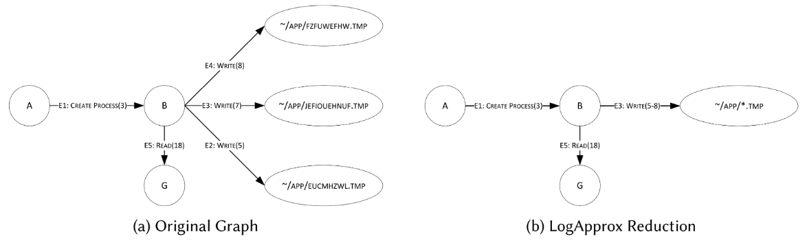", 'depth': 4}, {'content': '基于一个观察结果: 大多数溯源数据存储由 I/O 事件占用', 'depth': 4}, {'content': '生成正则表达式来描述良性的 I/O 事件, 然后使用这些正则表达式来汇总溯源图', 'depth': 4}]}]}, {'content': "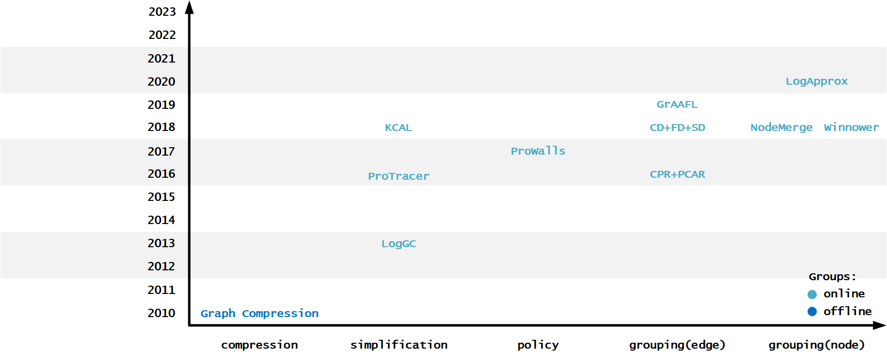", 'depth': 2}]},
            {"colorFreezeLevel": 2, "initialExpandLevel": 3}
        )
    </script>
</body>
</html>